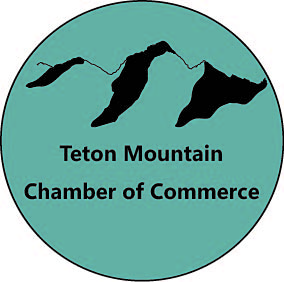

Purpose
The puspose of this website is to help members in the community connect and interact with other buisnesses in the area to create oppurtunities to help each other and the community.
Logo

The puspose of this website is to help members in the community connect and interact with other buisnesses in the area to create oppurtunities to help each other and the community.